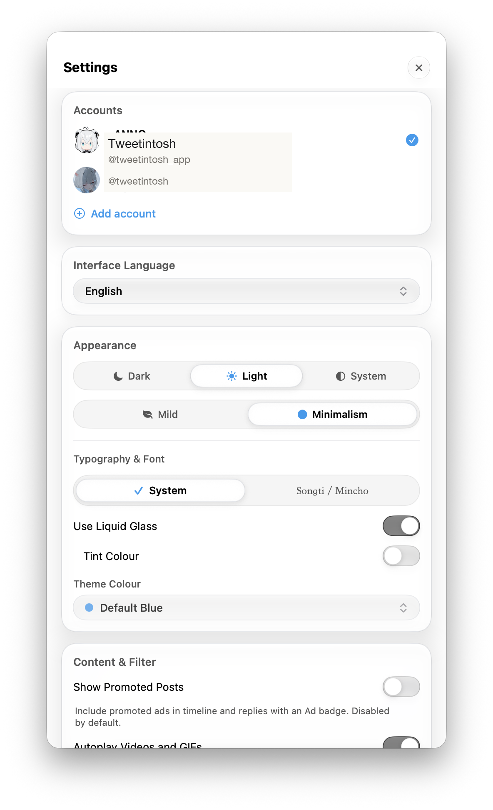
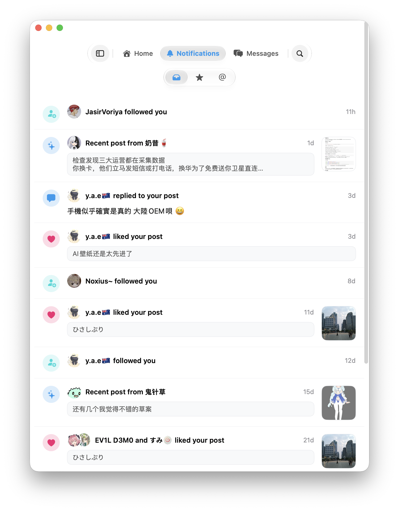
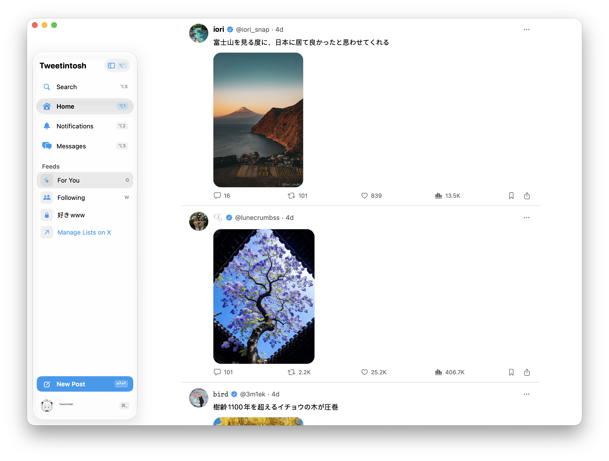

原生实机截图切片 · 实录捕获
透明投影，浑然天成
直接连接本机运行中的 Tweetintosh 进程截取的真实窗口。带有 macOS 原生抗锯齿与纯净透明投影，随主题自动变换。

实机原生截图 · Window ID 16067
主时间线与双栏并排排版
原生 SwiftUI `List` 驱动，秒级瞬时恢复离线快照。纯净透明窗口投影，融入任意桌面背景。

原生偏好设置
Liquid Glass 与排版
黑白主题、宋体/明朝体无级切换，严格遵循 Apple HIG 设计准则。

消息中心
三栏独立通知队列
全部、关注者、提及三路隔离流，零冗余即时筛选。

私信中心
私密通信与安全密钥
端到端私钥与会话密码保护，原生轻量快速响应。

2522 × 1914 纯净透明阴影全景大图
设计级母版渲染 · 零锯齿边缘
无缝匹配浅色米白 (#F6F4EE) 与深色暗夜 (#0D0D11)，完美支持高动态对比度与宽色域显示。